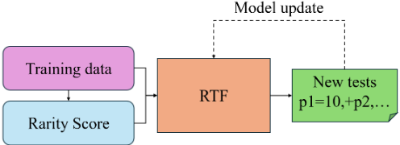
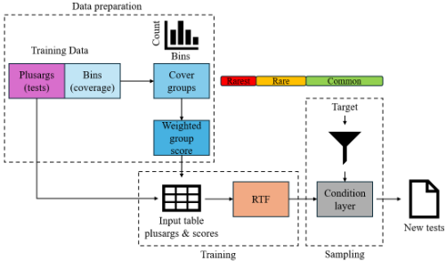
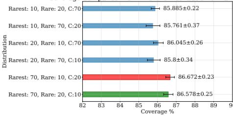
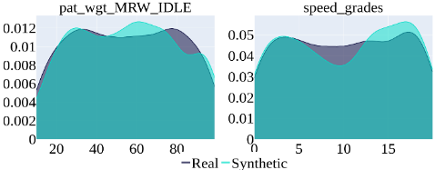
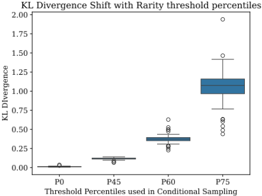
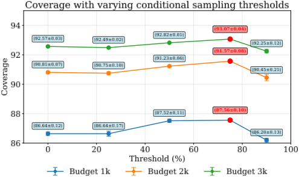
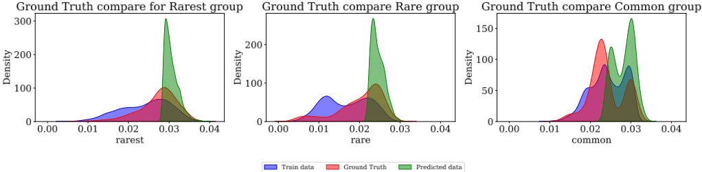
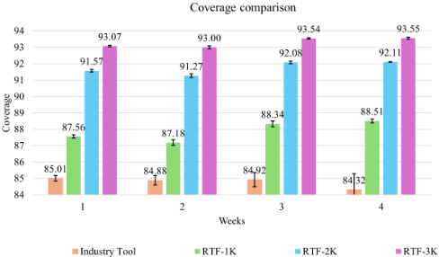
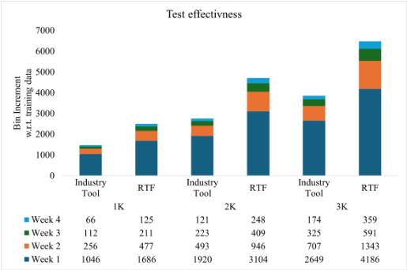
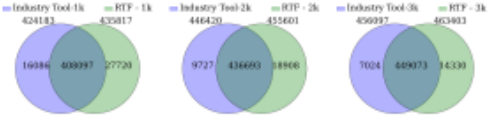

一种用于 DRAM 自动化验证的 GPT-2 表格化 Transformer 模型
针对复杂 DRAM 设计验证中 plusarg 输入空间过大、难以在有限仿真预算内最大化功能覆盖率的问题，Micron 团队提出基于 GPT-2 的 Relational and Tabular Transformer（RTF）自动测试生成方法。该方法将 UVM 测试平台的 plusarg 配置表示为表格数据，依据 coverbin 命中频率定义 Rarest/Rare/Common 三档 rarity score，并通过条件采样层引导模型生成偏向难命中 bin 的新测试，随后经 BFM 仿真、回收覆盖数据并迭代重训练。在约 497K 功能 bin 的 legacy DRAM 设计上，相比在用业界 AI 工具流程，RTF-1K/2K/3K 分别取得 2.34%、6.32%、7.89% 的覆盖率提升，四周评估中平均提升 4.2%~9.2% 且标准差更小；与业界工具融合后独特 bin 发现数达 1.7x~2x。该工作直接对应团队覆盖率驱动验证与 AI 辅助验证自动化两个能力域。
复杂 DRAM 设计的 DV 过程中，DV 工程师通过 plusarg 配置 UVM 测试平台控制测试生成，但 plusarg 输入空间过于庞大无法穷举；论文的目标是在用户定义的仿真预算内，自动识别能最大化功能覆盖率的最小测试/plusarg 集合，并借此减少下游更昂贵的 gate-level 仿真资源消耗。
将历史回归中 contributing tests 的 plusargs 与 coverbin 级命中频率组织为表格数据，按命中频率将 bin 划分为 Rarest/Rare/Common 三组并计算 rarity score；采用 REaLTabFormer（RTF）框架的 GPT-2 自回归 transformer 学习 plusarg 之间的条件分布、合法组合与取值范围，生成合成新测试；通过附加 relation 列与 threshold 列的条件采样层，把生成分布偏向 rarity score 高于用户设定阈值的区域；每批生成测试经 BFM 仿真后回收覆盖向量、重算 rarity score 并重训练模型，迭代循环直至达到仿真预算。
相比当前业界 AI 工具流程，RTF-1K/RTF-2K/RTF-3K 分别取得 2.34%、6.32%、7.89% 的功能覆盖率提升（目标设计约 497K 功能 bin）
四周跨周评估中，RTF-1K/2K/3K 相对业界 AI 工具平均覆盖率提升 4.2%、7.8%、9.2%，且标准差更小、可靠性更高
合成数据保真度：列边际分布得分 96.15%，列相关性得分 97.11%；示例 plusarg pat_wgt_MRW_IDLE 与 speed_grades 的边际分布得分分别为 97.4% 与 93.4%
与业界 AI 工具 ensemble 后，1K/2K/3K 预算下独特 bin 发现数分别为业界工具的 1.7x、1.9x、2x，合并流程覆盖率达 90.92%、93.62%、94.65%
经验调参结论：采样组比例为 70% Rarest/10% Rare/20% Common，75% 阈值条件在 1K/2K/3K 预算下于 75% 的数据集上表现更优；每批 200 条测试中 10% 为随机生成以避免陷入局部最优
与依赖强化学习或对抗训练的现有 DL 方法不同，本文用 GPT-2 条件化表格 transformer 直接学习 plusarg 联合分布来合成全新测试；相比 Bayesian Networks、Multi-Armed Bandit、决策树等仅对已有测试做选择与调度的 prior 工作，本文引入 rarity score 条件化生成以主动追逐未覆盖 bin，并首次展示与业界 AI 工具流程的 ensemble 融合可发现更多独特覆盖场景。
相关度级别：high
命中能力域：2.4 设计验证方法学 | 2.7 EDA/验证自动化与 AI 辅助
理由：论文场景与团队高度重合：团队为 LPDDR/HBM4 等存储 IP 交付 UVM 验证与覆盖率驱动回归，本文正是针对 DRAM 设计的 UVM plusarg 空间做 AI 驱动测试生成以在有限预算内最大化功能覆盖率，直接命中 2.4 的覆盖率驱动验证与回归方法学；其数据准备-训练-条件采样-仿真闭环与 rarity score 设计属于 2.7 的 AI 辅助验证自动化。论文还指出最小 contributing tests 集合可节省 gate-level 仿真资源，与团队下游 sign-off 仿真成本直接相关。
建议动作：深入精读并做内部分享
DV engineers can generate many different test scenarios by exploring the plusargs' input space, with the goal of maximizing the functional coverage of the BFM. By maximizing the coverage goal, designers and DV engineers can ensure that the Design Under Test (DUT) is exercised extensively. However, the plusargs' input space is often too vast to be explored exhaustively. Therefore, humandesigned combinations of plusargs and/or smart methodologies need Chinmaya Behera Micron Technology San Jose, California, USA
cbehera@micron.com
Samir Mittal
samir@micron.com

to be employed to produce meaningful combinations of plusargs and valid tests.
This process is of fundamental importance when dealing with the verification of complex designs such as DRAM or NAND. In fact, by identifying the minimum set of plusargs that maximizes the functional coverage of the BFM, engineers can identify bugs and unintended behaviors early on, both at design and testbench level. Moreover, identifying the minimum set of plusargs that can maximize coverage within a given simulation budget has direct implications for downstream processes, particularly when physical simulations are performed at the gate level. These simulations are more computationally expensive and time-consuming compared to those performed with a BFM, and simulating the most effective combination of plusargs allows saving significant resources, time, and enables more extensive testing.
Machine Learning (ML) algorithms, and in particular Reinforcement Learning (RL), have been shown to be particularly effective in this task. State-of-the-art industry AI tools are currently employed in industrial settings [1] to navigate the plusarg space and produce a minimum set of tests to simulate at hardware level.
In this work, we propose a different approach, where we leverage a GPT-2 architecture to train a Relational and Tabular Transformers (RTF) model [2] to generate synthetic tabular data. By representing the input plusarg space in a tabular format, we can exploit the ability of tabular models to learn correlations among plusargs and their values in order to produce new unseen data following the training data distribution. Then, by leveraging contributing tests' information, obtained from past simulations, we control the test generation to target regions of the input space expected to maximize the coverage based on the frequency of the design functionality being tested and a derived score (rarity score) from [3]. These synthetically generated tests can then be simulated, and their resulting coverage can be used to fine-tune the model over time.
本文提出的 RTF 方法利用 Transformer 模型的灵活性来生成合成表格数据，且不对输入数据施加任何特定约束。只要预处理后的数据能够以表格形式表示，RTF 模型便可将数据转换为 token 并据此完成生成过程，从而能够创建针对设计验证特定需求量身定制的合成数据。图 1 概述了该流程。
我们的主要贡献如下：
过去几年中，已有多种利用人工智能（AI）影响测试生成的方法被提出。这些工作大多依赖机器学习（ML）模型，如贝叶斯网络 [4]、[5]、遗传算法 [6] 和神经网络 [7]，来评估现有测试及 plusargs 的影响，从而识别最有前景的测试，并通过影响由特定 plusargs 控制的约束随机验证（Constrained Random Verification, CRV）空间来避免冗余仿真。
最近，Huang 等人 [8] 提出了多臂老虎机（Multi-Armed Bandit, MAB）回归方法，以最大化覆盖率为目标自动探索测试 plusargs。该方法利用贝叶斯 MAB，在不了解被测设计（DUT）任何信息的情况下识别并选择最佳的测试配置进行仿真。类似地，Jayasree 等人 [9] 提出采用决策树来估计测试覆盖率和仿真时间，并据此调度新的回归测试。Ferretti 等人 [3] 最近提出了一种类似的方法，利用模型预测来创建新的回归批次。与早期方法不同，他们的工作引入了 DUT 属性和层次信息来指导测试选择，并自动生成最优批次以减少总体仿真时间。在本工作中，我们利用 Ferretti 等人 [3] 在其预测模型中提出的稀有度分数（rarity score）概念来为我们的模型定义目标类别。这些类别被用作合成生成新测试的标签。
深度学习的最新进展，包括生成对抗网络 [10]、自编码器 [11]、语言模型 [12] 和扩散模型 [13]，已被证明在处理表格数据方面尤为有效。研究表明，与贝叶斯网络等传统方法相比，这些深度学习模型能够生成更真实的数据。基于层次建模算法（Hierarchical Modeling Algorithms）和高斯 Copula 的现有模型虽然能够合成数据，但往往无法准确捕捉表内以及表间的细微条件关系。为解决这些局限，Gong 等人 [14] 提出了 TabGPT，该方法使用自回归 Transformer（具体为 GPT）来生成任意长度的合成事务数据。尽管行之有效，TabGPT 需要为每个用户训练独立的模型，这使其难以在实际应用中落地。为克服这一问题，Solatorio 等人 [2] 提出了一种序列到序列（sequence-to-sequence）框架，将 GPT 的使用加以推广，使其能够基于输入条件生成任意长度的合成数据，为合成数据生成提供了更具可扩展性的解决方案。
在本工作中，我们利用 REaLTabFormer（RTF）框架 [2]，将测试输入空间表示为表格形式并生成新测试。此外，我们对该模型进行了增强，利用来自 [3] 的稀有度分数对测试生成进行条件化，以追踪被测设计中尚未覆盖的区域和功能。
我们方法的目标是，在给定的仿真预算下，找出一组能使目标覆盖率指标（即功能覆盖率）最大化的最优测试集合。鉴于输入空间的庞大范围和寄存器传输级（RTL）设计的复杂性，实现 100% 的覆盖率往往并不现实，需要大量耗时的迭代。此外，由于项目截止日期的限制，可执行的仿真次数通常受到预先设定的预算或时间框架的约束。在本研究中，我们将最大可达覆盖率（maximum attainable coverage），即覆盖率收敛（coverage closure），定义为在纳入所有用户指定的排除项（exclusions）之后所获得的覆盖率。类似地，我们的仿真预算是由设计验证（DV）工程师决定的用户自定义仿真次数，并使用总线功能模型（BFM）来执行。这一做法被 DV 工程师普遍采用，他们通常运行 BFM 仿真来识别出一个最小的贡献测试（contributing tests）集合，随后将这些测试用于更下游验证阶段中的门级仿真。
验证工程师会创建一组不同的测试，以执行特定的设计功能。此外，他们还会定义 plusargs（P）来对测试的执行进行参数化，并影响特定的测试功能。对一个测试及其相关 plusargs 集合进行仿真会生成一份覆盖率报告。该覆盖率报告可以表示为一个由整数组成的向量 cov，这些整数描述了每个功能覆盖仓（coverbin）或覆盖组（group）所获得的覆盖率。覆盖仓和覆盖组通常由 DV 工程师手动创建，用于表示设计中正在被运行的特定部分或正在被执行的特定功能。由这些覆盖率向量可以推导出累积覆盖率。它指的是对所仿真测试随时间推移或在多次仿真运行中进行的聚合度量，表示设计功能与场景已被测试的程度。通过对累积覆盖率进行后处理，还可以推导出贡献测试集合，记为 TC。贡献测试被定义为复现最大可达覆盖率所需仿真的最少测试数量。
所提出的方法论分为四个主要阶段：数据准备（Data Preparation）、模型训练（Model Training）、条件采样（Conditional Sampling）和仿真（Simulation）。利用过往仿真的数据来收集 plusargs 信息以及覆盖仓命中频率信息。这些信息被用于推导一个分数（score），随后通过定义稀有度分组（rarity groups）来识别目标仓。接着，在从原始数据中提取出输入测试和分数之后，使用测试与分数的表格化表示来训练 RTF 模型。模型训练完成后，即可生成合成测试样本。随后采用一个条件层来引导生成过程，确保输出符合由目标仓所表征的预定义分布。最后，对于每一批新生成的测试，都会触发一次新的回归，并重复上述过程，直至达到用户定义的仿真预算。
图 2 概述了该流程及其各个阶段。以下小节将对每个阶段进行详细描述。

该流程首先从过去数周获得的仿真结果中选取贡献测试。这些数据通过合并不同周次运行的仿真结果生成。将之前每周的仿真数据合并后，依次提取过去数周的贡献测试。每个测试都关联着一组唯一定义该测试的 plusargs。在实际中，测试可能包含缺失值或异常值，这会导致模型性能欠佳。为解决这些问题，我们采用多种数据预处理技术，包括插补、平滑和数据清洗方法，以确保输入数据准确可靠。对于每个此类测试，从其仿真中获取覆盖仓（coverbin）级别的覆盖率信息。对于每个覆盖仓，我们存储其相对于每个测试的覆盖率信息。这为我们提供了给定覆盖仓 b 在一组测试 t 上的覆盖频率。覆盖率数据以向量形式存储。对于每个测试，覆盖率向量指示该测试仿真期间命中的仓。根据命中频率，我们划分出不同的仓组：
这些组的定义目前基于经验观察。基于该分组，我们可以确定每个覆盖仓属于最稀有（Rarest）、稀有（Rare）还是常见（Common）组，并按如下方式计算稀有度分数：
其中 i ∈ G，i 标识组别，G 为所有组的集合，即 G = { Rarest, Rare, Common }。随后，plusargs 中的稀有度分数被用于定义 RTF 训练阶段的输入数据。
我们通过以表格形式表示测试的 plusargs 来为 RTF 模型构建问题。在计算出每个测试的稀有度分数后，该信息会与定义该测试的 plusargs 拼接在一起，使得每个测试具有三列，分别表示各个组及其对应的稀有度分数。我们的输入数据是一个矩阵 M n × p，其中 n 为参与的测试数量，p 为 plusargs 的数量。将稀有度分数拼接到该矩阵后，我们得到一个新矩阵 M ′ n × ( p +1)。经过修改、现已包含稀有度分数的 plusargs 表被用于训练 RTF 模型。
RTF 是一个基于 Transformer 的框架，旨在利用自回归模型生成非关系型表格数据，并通过序列到序列（Seq2Seq）架构生成关系型表格数据。该框架采用针对表格数据的专用策略对列和行数据进行编码，并结合用于检测过拟合的统计方法以及用于数据生成的受约束采样策略。对于非关系型表格数据，采用自回归的 GPT-2 模型来生成合成观测（测试）。每个观测（即测试）被视为一个 token 序列，其中行中的每个单元格被表示为一组唯一的 token，对应于相应的 plusarg 及其取值，从而使模型能够学习 plusarg 取值的条件分布。数值数据被转换为基于文本的格式，以优化训练和采样效率。这涉及舍入、字符串转换、填充和分词。类别数据（例如唯一值）被视为唯一的 token。如果存在缺失值（即某个 plusarg 未在某个测试中使用），则不进行任何转换，模型会学习缺失值的分布。
RTF 方法依赖于一种独特的数值与标签编码值表示方式。对于类别数据，每个数字会根据在潜在空间中表示每个部分所需的精度被拆分为 n 个部分。随后，每个表示与相应的 plusarg 相结合。例如，与两个不同 plusarg 相关联的相同 plusarg 值将由不同的 token 表示。这使得模型能够在利用注意力学习相应分布的同时，学习特定 token 集合的序列。
在训练过程中，执行正则化以将离群观测和过拟合的影响降至最低。类似地，使用与最近记录的距离和分位数差异统计量来检测过拟合，并采用自助法（bootstrapping）来指导训练过程中的早停。
训练完成后，该模型可用于生成反映训练数据分布的全新合成测试。这些合成测试是遵循所贡献测试数据分布的 plusargs 组合，但同时又不同于原始训练集。这使得我们能够在保留重要信息（例如 plusargs 之间的相关性、有效与无效组合以及可接受的输入范围等）的同时，生成新的未见过的测试。
我们依据稀有度分数（Rarity Score）的概念，基于输入约束对所需的 plusargs 组合进行采样。所创建的新样本旨在按照学习到的 plusarg 分布，探索有效 plusargs 取值范围内的所有可能的 plusargs 组合。然而，为了实现覆盖率的提升，我们对采样分布进行偏置，以针对功能覆盖率空间中尚未到达的部分。为实现这一目标，我们实现了一个条件采样层，用于增强训练数据；训练数据表示为 plusargs、稀有度分数以及附加属性：一个关系列和一个阈值列。关系列表示逻辑运算符（例如：等于、大于/小于等），并与阈值列结合使用。这两列的目的在于表示关系运算符和阈值相对于 plusargs 组合与稀有度分数的分布。这两个附加列将我们的输入矩阵重塑为 M ′ n × ( p +3)。因此，在 RTF 训练阶段，模型可以学习在给定关系运算符下 plusargs 组合、阈值和稀有度分数的关联分布。在采样时，关系条件和阈值会被传递给模型，从而只生成预期稀有度分数大于所需阈值的 plusargs 组合。可以根据用户的需求向条件层传递不同的条件运算符，使用户能够从不同的稀有度分数组中进行采样。条件采样依赖于稀有度分数的存在；若没有该分数，条件采样便不适用，因此模型的性能也无法被单独评估。因此，在本工作中，我们采用一种分层的稀有度分数定义，根据 bin 的出现频率将其归入三个类别：最稀有（rarest）、稀有（rare）和常见（common）。
在我们的场景中，我们通过对模型进行条件化来采样新测试，使其选择更可能属于最稀有组而非其他组的测试。这样，模型便可以被引导生成更可能覆盖到很少被命中的 bin 的新测试，而不是聚焦于较为常见的 bin。从不同组进行采样的实际分布，可由用户通过提供针对各组的阈值来直接控制。
一旦采样新的一批测试，便对这些测试进行仿真，并提取覆盖率信息。每批仿真完成后，仿真数据的覆盖率结果会被加入训练语料库；随后按照上文所述的相同流程对模型进行重新训练。该循环不断重复，直至达到用户定义的仿真次数。
We have implemented and tested our methodology targeting a legacy industrial DRAM design. The design has roughly 497K functional bins. After applying user-defined exclusions for unreachable states and infeasible scenarios, these bins represent the coverage space we aim to maximize within our simulation budget. The compared DV flow used the industry AI tool to generate weekly simulations leveraging training data from the past week. The industry AI tool flow produces an average of six different runs, each consisting of one-thousand simulations, per week. Then, the best run among the industry AI tool runs and the training batch is selected for hardware simulation. The selected run is also used for the following week's training. We tested our methodology following a similar approach. The same prior week coverage information used by the industry AI tool has been provided to the RTF model for training, and a different batch of simulations has been produced leveraging our flow. The industry AI tool flow used for comparison in this work has been recently published in [1], where it was used to test designs in a similar setting. We have replicated the same flow and adopted it as a comparison in our evaluation.
Initially, contributing tests are collected from historical data. Based on the frequency of bins hit for a given set of tests, rarity scores for each of the groups (Rarest, Rare, and Common) are calculated. These scores, along with plusargs, are used to train the RTF model. Upon training, a batch of new tests x 1 are generated using conditional sampling, which generates tests with rarity scores greater than the threshold for each given rarity group G , where the threshold is defined by the user according to the exploration needs. In the current implementation, 70% of the samples are expected to belong to the Rarest group, 10% to the Rare group, and 20% to the Common one. These numbers were chosen based on empirical observation, as observed in Figure 3. Lastly, the sampled tests produced from

RTF are adjusted to factor out randomness to avoid getting stuck in local optima. Currently, 10% of tests are randomly generated.
Then, the newly generated batch of plusargs is simulated using the BFM, and a new set of coverage vectors are obtained. The new batch, including the coverage information, is added to the initial train data, and rarity scores are re-calculated. The RTF model is re-trained on the new data to generate a new batch x 2 .
该过程重复 r 次，直到生成第 x i 批，或达到给定的仿真预算 B。在随后数周中，通过将来自历史数据的初始贡献测试与新近生成批次中的贡献测试相结合来准备训练数据。RTF 训练与仿真过程被重复执行，以针对给定的重复次数生成预算。遵循这一模式，我们在不同周内生成多组新的 plusargs，旨在扩大用于训练模型的贡献测试总体集合，进而提高整体的 coverbin 可达性和覆盖率。
我们生成了每批 200 条测试的批次，并分别在总预算为 1,000、2,000 和 3,000 条测试的情况下重复了该过程。针对 RTF 流程的不同预算，我们分别进行了 6 次、3 次和 2 次不同的运行，以产生与业界 AI 工具所采用的相同数量的仿真，总计 6,000 次仿真。
RTF 模型使用 GPT-2 架构进行训练，并采用针对表格数据生成而优化的标准超参数。训练在 GPU 硬件上执行，并采用基于过拟合检测指标的早停（early stopping）策略。模型将 plusargs 作为分词序列进行处理，通过自注意力机制学习条件分布。为确保鲁棒的泛化能力，采用了包括 bootstrapping 和 distance-to-closest-record 统计量在内的正则化技术。
我们利用为每一单列数据生成的合成数据与真实数据之间的统计相似性，衡量了 RTF 模型学习 plusargs 及其合法取值分布的能力。该指标也称为每列的边缘分布（marginal distribution），刻画了列取值分布的偏度、多峰性和集中趋势等方面。高得分表明合成数据有效复现了每一列的分布特征。同样地，我们还测量了成对列的真实数据与合成数据之间的相似性，这通常被称为列间的相关性或双变量分布。各列观测到的边缘分布得分为 96.15%，而列相关性得分为 97.11%，凸显了我们所训练模型从原始数据中学习的有效性。


图 4 展示了针对两个 plusarg 学习到的真实与合成数据分布：数值型 plusarg pat_wgt_MRW_IDLE 和类别型 plusarg speed_grades。两者的边缘分布得分分别为 97.4% 和 93.4%，这一点从图中真实分布与合成分布相似的形状即可看出。
此外，我们测量了相对于训练数据以及不同采样阈值的 Kullback-Leibler（KL）散度。图 5 展示了这一分析。在图中，我们考虑了 P0（代表原始训练数据）、P45（代表第 45 百分位）、P60（代表第 60 百分位）以及 P75（代表第 75 百分位）。这些阈值是基于经验观察选择的：经验观察显示，随着更高百分位对应的样本量减少，KL 散度值呈指数级增长，导致分布进一步偏离原始训练数据。在来自模型的五个不同样本上取平均的结果显示，P0 数据的 KL 散度得分较低，表明模型能够准确复现原始训练数据分布。随着采样阈值的提高，模型开始从高维 plusargs 空间中的特定区域进行采样，导致更高的 KL 散度值。这一行为表明，模型能够有效识别并复现这些特定区域，使其能够以更有可能覆盖难以命中的 bin 的分组为目标，从而提升测试配置的覆盖率。
Lastly, we have evaluated the effectiveness of the conditioning layer to skew the test generation in order to produce the desired rarity score distribution. Figure 7 shows the results of the model training after conditional sampling. We sampled new tests with the goal of targeting rarest , rare , and common bins. For each of the rarity scores, the figure shows the RTF model-learned distribution from the training data (blue), the predicted data distribution for the new samples (green), and the actual ground truth distribution (red) obtained after the simulations. However, to confirm the effectiveness of the conditioning layer, a more detailed analysis of the distribution and its correlation with the rarity scores is necessary. The plots show a clear learning trend for conditional sampling across repetitions. For each rarity group-rarest, rare, and common-the plots demonstrate that the skewness of the predicted data distribution closely mirrors that of the ground truth distribution. This indicates that the conditioning layer effectively steers the test generation process towards the desired rarity score distribution. While the RTF model does not look into the numeric values due to the special embedding required by the RTF architecture [2], it learns the joint distributions across tokens effectively. This is particularly evident for the rarest and rare groups, where the uniqueness of the plusarg combinations with respect to the rarity groups is more pronounced. The right condition threshold was selected using another empirical study. The model was sampled using different threshold conditions, which were then simulated to fetch the coverage values. Figure 6 clearly shows that at each budget, the threshold value of 75% performed better. The model's ability to capture these nuanced distributions highlights its capability to generate meaningful and targeted test cases.

| Methodology | # Contributing Tests | Coverage % | # Bins Hit | New Bins Hit |
|---|---|---|---|---|
| Industry-Tool | 990 | 85.34 | 424183 | 1024 |
| RTF-1K | 997 | 87.68 | 435817 | 1722 |
| RTF-2K | 1844 | 91.66 | 455601 | 3264 |
| RTF-3K | 2501 | 93.23 | 463403 | 4174 |
| Industry-Tool+RTF-1K | 1828 | 90.92 | 451903 | 2503 |
| Industry-Tool+RTF-2K | 2443 | 92.9 | 461751 | 3791 |
| Industry-Tool+RTF-3K | 2906 | 93.9 | 466707 | 4758 |
| Methodology | # Contributing Tests | Coverage % | # Bins Hit | New Bins Hit |
表I详细汇总了在相同仿真次数下，工业界AI工具与采用不同批次预算的RTF模型所获得的结果。表中报告的结果是在同一周内针对设计与测试平台收集的，并且使用了相同的初始数据来训练各模型。可以观察到，所提出的RTF流程能够取得比工业界AI工具基线更高的覆盖率，RTF-1K、RTF-2K和RTF-3K分别获得了2.34%、6.32%和7.89%的覆盖率提升；这一点也体现在命中的bin数量上。所报告的覆盖率为各次不同运行中所获得的最大覆盖率。

类似地，图8详细汇总了工业界AI工具与RTF模型在四个不同周内所获得的结果；在这四周期间，由于硬件设计过程的实时动态变化，设计与测试平台均可能发生改变。跨周来看，除第一周（此时两种流程可获取相同的信息）外，工业界AI工具流程利用的是该流程在前几周中发现的贡献测试（contributing tests），而RTF流程利用的是RTF探索所获得的贡献测试。从结果中可以观察到，总体而言，RTF流程在所有周中均持续优于工业界AI工具。在四周结束时，相对于工业界AI工具，RTF流程使用RTF-1K、RTF-2K和RTF-3K分别取得了4.2%、7.8%和9.2%的平均覆盖率提升。此外，还可以观察到，与工业界AI工具流程相比，各RTF版本的标准差更小，因而相比工业界AI工具具有更高的可靠性。
除了在不同周的每轮回归结束时测量覆盖率之外，我们还评估了各流程相对于初始训练数据发现新bin的能力。测试有效性使我们能够基于各流程在探索搜索空间方面的有效性来对其进行评估，而不是通过复用已学习的分布而聚焦于已被识别的区域。需要注意的是，除了使用相同训练数据的第一周之外，从第二周开始，各流程将依赖于由前一周的探索所导出的训练数据。
图9展示了在为期四周的评估期间新bin的累积发现情况。堆叠柱状图展示了每周的探索如何贡献额外的覆盖率；在所有预算配置下，各RTF版本相比工业界AI工具持续发现更多独特的bin。
最后，我们评估了基于 RTF 的方法在与工业界 AI 工具结合时所做出的贡献。在该设置中，我们在保持相同仿真预算的前提下，合并了由工业界 AI 工具和 RTF 流程所获得的结果。此外，在该场景中，我们合并了多次工业界 AI 工具运行的结果，以便在相同仿真次数的条件下进行比较。
图10展示了工业界 AI 工具流程与三种 RTF 变体的维恩图（Venn Diagram）。RTF 能够发现数量显著更多的独特场景：在 1-K、2-K 和 3-K 预算下，相对于工业界 AI 工具，分别发现了 1.7 倍、1.9 倍和 2 倍的独特 bin。尽管如此，工业界 AI 工具同样能够为覆盖率提升做出贡献，这一点从其发现的独特 bin 中可以看出。事实上，合并这两个流程能够分别实现 90.92%、93.62% 和 94.65% 的覆盖率。本分析的目的在于观察不同流程有效瞄准搜索空间不同区域的能力。由于探索策略的性质各不相同，各流程所瞄准的搜索空间区域也不同。因此，通过采用两个模型的集成（ensemble），我们可以获得不同流程所带来的收益。



所提出的方法提供了一种全面的途径，通过使用条件化 Transformer 模型架构生成新测试来加速 DRAM 硬件设计的验证。通过利用 Transformer 模型的优势并引入一种新颖的稀有度评分（rarity score）特性，该技术提供了一种有针对性且高效的方式，可确保对复杂硬件系统进行全面的测试与验证，相对于当前采用的设计验证流程，覆盖率提升最高可达 7.89%。
尽管我们的结果展示了明显的改进，但仍应承认存在若干局限性。我们的评估仅限于单一的传统 DRAM 设计；未来的工作应在其他 DRAM 世代和存储器类型上验证该方法，以评估其更广泛的适用性。稀有度分组阈值（≤ 150、150-400、≥ 400）是针对该设计凭经验选取的，未来的工作应探索基于当前覆盖率状态的动态阈值自适应或基于百分位数的定义，以便在不同设计之间获得更好的泛化能力。此外，与随机采样基线以及其他机器学习（ML）方法（TabGAN、遗传算法）进行全面比较，将能提供更完整的性能表征。
有前景的未来方向包括：与形式化验证的集成、在测试生成过程中通过在线学习自适应调整阈值、在覆盖率与仿真时间之间进行权衡的多目标优化，以及将该方法扩展到存储器设计之外的其他验证领域。
1 条证据未在原文中核对到